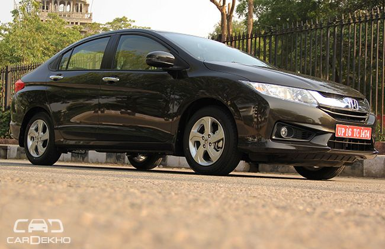

Honda City
Honda Cars India has launched a new VX(O) BL variant in the City, featuring all-black interiors with black leather upholstery. The VX(O) BL trim is only offered in manual transmission (both petrol and diesel) with Premium White Orchid Pearl and Alabaster Silver colours in the line-up. The company said that the VX(O) with beige leather interiors is available along with the new black one. In a nutshell, now there is an option of an all-black or beige interiors with the top-end Honda City manual. Since the company has added the 4th gen City to its list, the sale of the very same has reached a number of 1.6 lacs.